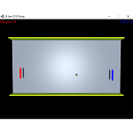
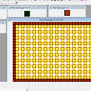
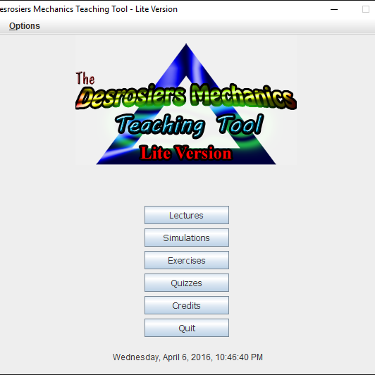
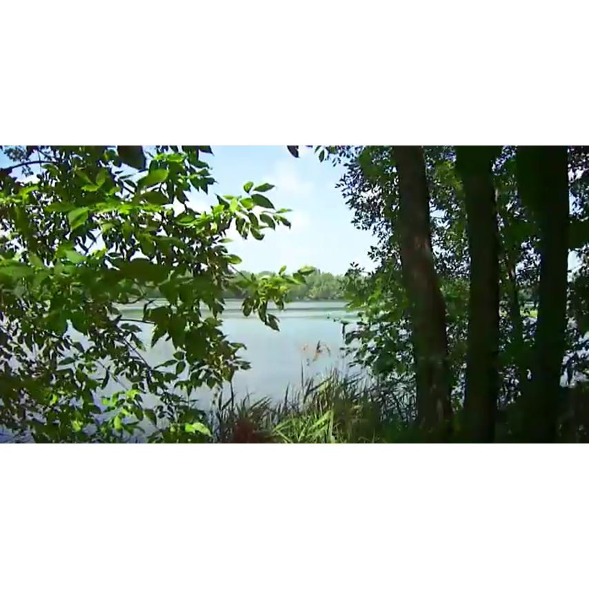
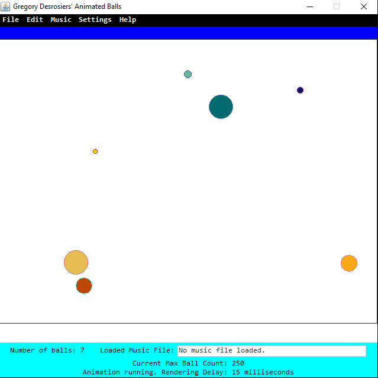

Gregory P. Desrosiers
Explore More about Myself: Portfolio of Projects
GPD Pong
While I was completing Software Engineering 2B at the University of Waterloo, facing some disappointment that I couldn't get an interview for a video game development co-op, I decided to take some of my might to learn Unity. Unity is a popular game engine used by several gaming companies including Nintendo and Microsoft.
It took me about two months to build this as a big update to my previous Game Jam 2015 Pong project, because I was dealing with university education at the same time as watching the basics of using the Unity game editor for building it.
From here, I decided to upload it onto several gaming websites, including Newgrounds and Kongregate. It was released on September 3, 2016.
UW AutShell

In November 2015, I approached an upper-year SE student on a very small hackathon called the SE Hack Day. It was the last hackathon I would attend for the fall where I would be able to deal with a small amount of opinions to see where I would go next; plus, there was some more flexibility compared to the challenges I had at Hack the North where I took some things too personally.
The project I decided to tackle, although it was very large in scope at first, was an operating system shell written in C# to mimic the behaviors of a child with autism. That's because in traditional shells, we are so limited to commands that only perform operations on the given data. I decided to add a "personal feel" to it so that it wouldn’t be as boring as it looks.
GI Jam 2015 Pong

September 2015, I was recommended by two members of the UW Game Development Club to participate in an event called the GI Jam. From participating the event in October, I was exposed to some stuff, especially when it was my first time building a raw game for real.
For this, I decided to build this very basic 3D clone of Pong with the feature for the tilting the camera based on the ball's position with respect to the board's width. It was a very rough start because there were so many ideas I didn't really understand at the time, especially the way on how games are developed these days.
Freaky Bomb Freak

At Hack The North 2015, initially I was in a team of three where we wanted to build an online app that involves taking a look at a person's resume and using a bunch of algorithms to analyze it, assign it a grade to what an ideal employee would expect. But because I found out at one point it was so stressful for me where I felt like I needed to prep up myself and I did not, I decided to leave the team and work on something different.
What I decided to try to work on is this clone of Bomberman, which is a video game series made by Hudson Soft (which no longer exists, sadly). This was written in Java, but not that much progress has been made because I think the project was too large in scope. It would procedurally generate levels of its own and place enemies accordingly, especially when one of the elements at the time of NES games were sprites of consistent sizes. It was also to replicate graphics of colors based on VGA palettes to give a nostalgic look.
Caffeine Hunter - Scribbler Bot Project
In September 2014, Dr. Andrew Morton (the director of Software Engineering at UWaterloo) assigned us a robot project to practice three different things: be exposed to a simple programming language without all the cumbersome syntax and computer science theory known as Python, start from the bottom in exploring robotics with a simple approach by using the Myro modules included in our Scribbler bot and its associated Fluke dongle, and to practice our knowledge of the software engineering principles such as the development lifecycle.
I was in a team of six students; we each came up with our own proposal, but it was only after evaluation that we decided which one was best. And so, we worked on, with a five-day extension, an image processing algorithm where the robot would move towards a can in an open-space environment.
We produced a report of our project, along with the progress on its implementation and elaboration. I was involved in managing the team by keeping the encouragement up, asking questions on how they're doing, and keeping track of our progress by frequently writing new stuff on our progress log. (You will need Adobe Reader to read this report as it is a PDF file.)
The Desrosiers Mechanics Teaching Tool

This is my original integrative project I did in my last programming course at college; it was an assignment where we had to design an Java application to solve a problem that involves the use of material taught from a previous course in the same college program. What I had originally was an idea for an education tool that teaches students concepts of mechanical physics using all the chapters I've learned in one physics course taken in Fall 2012.
I was too short on time when I was planning, because one thing that wasn't totally clear in the instructions was how much material is to be used in the problem-solving program. Another was me trying to come up with alternative ideas for such a project because towards the end of that semester, some teams have developed applications that are computer games, image processing, audio editors, and even exploration.
Some of the things I was able to produce in the program that was unique and stood out was a splash screen with a loading message, a credits utility, a "Press Start" screen, and my own logo for the program created using Adobe Photoshop Elements 9.
Developed using Java 1.7.0, Eclipse and NetBeans IDEs. Eclipse was used for mostly coding, while NetBeans was used to create the graphical components of the application with its built-in Java WYSIWYG editor. Cacoo online software was used to edit UML diagrams.
The project is available for download in the "GitHub Repository" page.
Traffic & The River Music Videos

In Spring 2011, while waiting for my school bus onward to Heritage Regional High School from my home nearby, I had a thought where there should be some kind of video about cars rushing by on Quebec Route 132 because there was an overpass far into the distance from the corner of my street. As my last year of high school ended, this idea kept on persisting me so much that eventually, at one point, I decided to give it all. And so I spent about $500 of my spare money for a new camera, a few batteries, and a tripod, to make two different music videos. It took me two full days to complete all the recording.
Finding a composer and doing all the editing was not very easy. In fact, since I was so new into special effects, I ended up randomizing different combinations of cheap effects as I edited my videos on Sony Vegas Movie Studio HD 9.0. And I didn't necessarily planned a budget for a composer I was seeking; it was only until March 2012 when I finally got a composer who decided to volunteer and write the music for me.
I wish I can explain more about these videos. However, let me show you one of them, as I uploaded both of them on YouTube to try to make a profit through the Partner Program. (The other video cannot be viewed because I had a thought where it did seem to make a bother to all the people who might have seen my video camera as I recorded.)
(This was recorded in Boucherville, along a boulevard that was next to one of the split paths of the Saint Lawrence River since on the far side is Îles de Boucherville, three different isles with a public golf course and cycling park on top.)
In addition to this video, I also did this website project for one of my CEGEP courses. It involved using a combination of Adobe CS3 Dreamweaver and Photoshop to develop an advertising site for the two videos. A bit of Flash, along with the generated JavaScript file to drive the Flash components, is also included. It is available for download under "GitHub Repository."
The Asperger Computer - Speech Presentation
On January 20, 2013, one night before my first day in my fourth semester at Champlain College Saint-Lambert, I drew down on paper some ideas for a speech delivery I wanted to make to the students at this institution.
Below is a SlideShare presentation of my original PowerPoint file used in the speech. It was delivered in the afternoon of May 1, 2013, with me being under an Angry Birds t-shirt that I still have to this day, at Champlain's amphitheatre. Several photos have been taken of this day thanks to one of the staff; you can view them here. (Under "Galleries," click on "Student Activities." Click on the 2012-13 album, then "2013.05.01 – Freeblock May 1st!" Finally, go to the last page of the album. The first photo of this event is the one where it's an audience in front of a projected screen.)
The Asperger Computer - A Self-Published Guide on Asperger's Syndrome and Multimedia
I once wrote a very long e-book (190,000 words, to be exact) in June 2013 and got it for sale on several different e-book stores including Lulu.com, Smashwords, Amazon KDP, Payhip, Kobo, and Barnes & Noble NOOK, to name a few. It was a completely rewritten version of my first attempt at writing an e-book and getting it out to sell, where it was released past one weekend midnight in April 2013. Somehow, I didn't planned out a publishing and advertising budget in advance, and we were financially struggling to keep up at the time. So in the end, the book was removed from all the stores I've uploaded the book to.
AWT Animated Balls

In August 2013, I decided to do a project of my own for 12 straight days where it involved developing a GUI application, in Java, of circles painted on a canvas and there would be animation, the ability to make changes to each circle, and how fast they would move across the canvas. I called it "Gregory Desrosiers' Animated Balls" because it resembled balls with very simple and straightforward linear motion instead of realistic motion.
I used both the AWT and Swing packages to program this app, with a whole bunch of utilities I was able to program myself. If you want to see it, please download it directly from my GitHub repository.
WARNING: If you click on "Remove a ball" from the menu bar where you have two balls before removal, and then click on "Edit a ball" with one ball left, the program actually crashes and no longer responds. That"s because in the underlying code, I am using a special form of a memory array to store info on the balls. (In technical words, I am using an ArrayList from the java.util package. Remembering how I ran the program in August 2013 with the command prompt underneath, the error I got is an ArrayIndexOutOfBoundsException; I didn't program a try-catch block to handle such exceptions.)